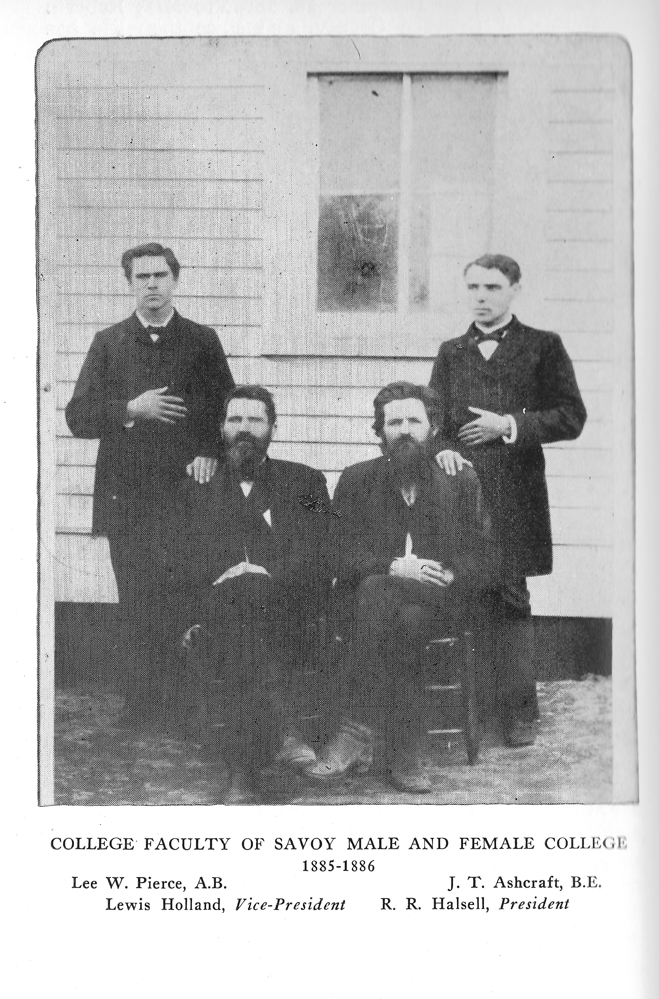

Founding & the Savoy Family

Savoy, Texas, takes its name from the family that planted roots in this corner of Fannin County in the years following the Civil War. Col. William Savoy — whose portrait and engraving survive in this archive — was among the earliest settlers, joined by his son George Washington Savoy and other family members including Marshal Savoy. They settled in the rolling farmland of North Texas, establishing a community that would bear their name for generations.
In the 1870s, the town began to take shape as a genuine community. Merchant families arrived. H.H. Arterberry opened his dry goods store, and Arterberry & Son became one of the first commercial landmarks of the new settlement. The Wrenn family, the Holland family, and the Halsell family were also among the early pioneers who gave Savoy its social and civic character.
Savoy Male & Female College (1876–1890)

The defining institution of early Savoy was its college. In 1876, R.R. Halsell — a photograph of whom survives, captioned simply "rrhalsellcollege-founder" — established the Savoy Male and Female College, one of the ambitious educational ventures that dotted the Texas frontier in the post-Reconstruction era.
The college attracted students from across North Texas and beyond. Its faculty was photographed, its philosophy class assembled for a formal portrait, its extracurricular activities documented. College alumni photographs show a community of scholars at a time when higher education in this part of Texas was still a novelty. A young student named Gus Thomas — son of one of Savoy's families — was photographed as a college student, a small human detail in the larger institutional story.
"The college drew students from across the region and for fourteen years stood as one of North Texas's genuine centers of learning."
The college came to an end when its building burned on July 3, 1890; attempts to revive it failed. But the institution's memory proved durable. Alumni continued to hold reunion gatherings for decades — the organized reunion began in 1937 with J. B. May and Prof. Ed A. McMahon as its "ringleaders" and continued through 1951, 1952, and beyond — and Savoy built a new gymnasium for its public school named the Halsell Memorial Gymnasium, a lasting memorial to the college's founder, R. R. Halsell.
A comprehensive history of the college — History of Savoy Male and Female College, 1876–1890, written by Mattie Lee Boyd (a 1939 University of Texas master's thesis) — is available in the Documents section, and its full text is now searchable in the archive.
The Great Cyclone of 1880
At about 10:10 p.m. on Friday, May 28, 1880 — the date preserved in a local rhyme, "'Twas in the year of 1880 on the 28th of May, that a tornado hit Savoy and blowed it all away" — a tornado roughly 178 yards wide tore centrally through Savoy. According to the Bonham News, it demolished about forty houses and every business but one, killed nine people, and wounded fifty to sixty more. (The town's Methodist church register, whose records were destroyed that night, dates the storm to May 29.) The disaster was covered by newspapers across the state and nation: the Brenham Weekly Banner ran articles on June 4 and June 17, 1880, the Austin Daily Dispatch published its own account on June 4, and a Kansas paper, the Holton Recorder-Tribune, still carried the story in 1888.
The seminary (the Academy) was turned into a hospital; it and the Methodist church were nearly the only buildings left standing. Word reached Bonham, eleven miles east, only when a train pulled in at 1 a.m., and by morning relief engines were carrying physicians and nurses from Bonham, Dodd City, Bells, Sherman, and Denison. Survivor stories endured: the blacksmith, Mr. Brooks, acted on a premonition and moved his family out just before their house was destroyed; little Rilla Kerns, thrown forty or fifty yards clear of any wreckage, was not found until daylight and died the next day. A heavy rain immediately after the storm doused a fire that had broken out in McKnight's Drugstore, sparing the wounded trapped in the ruins.
A list of tornado victims was also compiled, a somber document now held in the archive. The community rebuilt. In 1930, fifty years on, a local poet wrote a "Cyclone Poem" published in the local paper — evidence that the event had passed from living memory into legend. In 1993, a newspaper article revisited the 1880 cyclone again, more than a century after it struck.
Town Charter & Civic Life (1885)
In 1885, Savoy received its formal town charter, bringing official civic governance to the community. The charter document survives in the archive. The same year, the first official town election was held, establishing local government and signaling the town's maturation from frontier settlement to organized municipality.
Legal records from this era include warrants involving the Wrenn family — a glimpse into the frontier justice system of late-nineteenth-century Texas. Marriage certificates, including one for William Savoy and another for the Arterberry family, document the social bonds that held the community together.
The Early Twentieth Century

Savoy entered the new century as a functioning small town. The Savoy Star newspaper chronicled community life. Currency from the Savoy Bank survives in the archive. The town's main street — photographed around 1900 on both sides — shows a busy commercial district with storefronts, wagons, and the ordinary commerce of small-town Texas life.
In 1907, the Savoy Star was photographed in several editions. By 1910, the town's photographic record shows streets, people, and buildings in transition. The 1916 photographs of the elementary and high school buildings document the town's investment in public education.
The Depression & New Schools (1930s)
The 1930s brought hardship to Savoy as to the rest of the country, but also investment. Photographs from 1930 capture the town during the Depression years. A new school building was erected and photographed in 1932. By 1937 and 1938, a comprehensive modern school campus was completed: the Administration Building, the Primary Building, the Ad Shop, and the Halsell Gymnasium. The Savoy College Alumni Association Certificate — a formal document from this era — attests to the college's enduring social legacy even decades after its closure.
Post-War Life & The Great Fire (1940s–1950s)
.jpg)
The 1940s saw Savoy's young men go to war. A 1944 Paris News article on page 3 reflects the regional war coverage that touched every small Texas community. In 1946, a newspaper story covered Marshall Savoy, one of the founding family's descendants.
By 1950, Savoy's main institutions were photographed: the Church of Christ, the Methodist Church, the Humble Gas Station, and Miller's Service Station. An aerial photograph captured the town from above. The 1951 Agricultural Boys photograph and the 1953 Lady Basketball team portrait show a community proud of its school and its young people.
Then came 1954, and the fire. A blaze swept through downtown Savoy, destroying the Church of Christ and other buildings. Newspaper articles — nine separate clippings — documented the disaster and its aftermath. Mayor S.A. Bibby presided over the community's response. By 1956, a new City Hall and Fire Station had been built — the community's answer to the disaster.
Later Decades (1960s–2000s)
In 1966, Savoy ISD was extensively photographed — students, faculty, the School Board, and Superintendent Robert Hodges. The water tower was photographed in 1967. Thirteen photographs document the Acme Colorart Printing Company in 1969. A 1976 antiques article, a 1978 basketball team, and a 1979 bus wreck all appear in the local paper record.
The 1980s and 1990s are documented in a rich collection of photographs. The 1987 baseball team is photographed. A water system article (1987) and a Super Sack factory article (1988) reflect the decade's economic concerns. The 1993 cyclone article revisits the 1880 disaster — more than a century on.
In 2004, a Savoy Family Plaque was dedicated — a formal act of preservation honoring the founding family. In 2005, a historic church sanctuary and its bell were documented, and a church restoration project photographed. Bird's-eye views of contemporary Savoy provide the final frames in a photographic archive stretching back 150 years.
Continue Exploring: